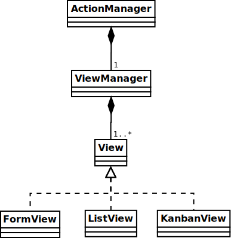

Примечание: этот раздел действительно устарел. Когда-нибудь он будет обновлен, но, тем не менее, этот учебник, вероятно, будет разочаровывать, поскольку он был написан очень давно.
Это руководство о создании модулей для веб-клиента Odoo.
Чтобы создать сайты с помощью Odoo, смотрите Создание сайта; чтобы добавить бизнес-возможности или расширить существующие бизнес-системы Odoo, смотрите Создание сайта.
Предупреждение
Это руководство предполагает знание:
- Основы Javascript и хорошие практики
- jQuery
- Underscore.js
Также требуется :ref:`an installed Odoo <setup/install>`и Git.
Простой модуль
Давайте начнем с простого модуля Odoo, который содержит базовую конфигурацию веб-компонента и позволяет нам тестировать веб-фреймворк.
Пример модуля доступен онлайн и может быть загружен с помощью следующей команды:
$ git clone http://github.com/odoo/petstore
Это создаст папку `` petstore``, где бы вы ни выполняли команду. Затем вам нужно добавить эту папку в путь Odoo: option: addons <odoo-bin --addons-path> `, создайте новую базу данных и установите модуль oepetstore`.
Если вы просматриваете папку `` petstore``, вы должны увидеть следующее содержимое:
oepetstore
|-- images
| |-- alligator.jpg
| |-- ball.jpg
| |-- crazy_circle.jpg
| |-- fish.jpg
| `-- mice.jpg
|-- __init__.py
|-- oepetstore.message_of_the_day.csv
|-- __manifest__.py
|-- petstore_data.xml
|-- petstore.py
|-- petstore.xml
`-- static
`-- src
|-- css
| `-- petstore.css
|-- js
| `-- petstore.js
`-- xml
`-- petstore.xml
Модуль уже содержит различные настройки сервера. Мы вернемся к ним позже, а сейчас давайте сосредоточимся на веб-контенте в папке `` static``.
Файлы, используемые на «веб» стороне модуля Odoo, должны быть помещены в «статическую» папку, чтобы они были доступны для веб-браузера, файлы за пределами этой папки не могут быть извлечены браузерами. Подпапки `` src / css``, `` src / js`` и `` src / xml`` являются стандартными и не являются строго необходимыми.
- `` Oepetstore / статический / CSS / petstore.css``
- В настоящее время пусто, будет содержать CSS для содержимого зоомагазина
- `` Oepetstore / статический / XML / petstore.xml``
- В основном пустой, будет содержать шаблоны Qweb
- `` Oepetstore / статический / JS / petstore.js``
Самая важная (и интересная) часть содержит логику приложения (или, по крайней мере, его веб-браузера) в виде javascript. В настоящее время он должен выглядеть так:
odoo.oepetstore = function(instance, local) { var _t = instance.web._t, _lt = instance.web._lt; var QWeb = instance.web.qweb; local.HomePage = instance.Widget.extend({ start: function() { console.log("pet store home page loaded"); }, }); instance.web.client_actions.add( 'petstore.homepage', 'instance.oepetstore.HomePage'); }
Который только печатает небольшое сообщение в консоли браузера.
Файлы в папке `` static`` должны быть определены в модуле для их правильной загрузки. Все в `` src / xml`` определено в `` __manifest __. Py``, а содержимое `` src / css`` и `` src / js`` определено в `` petstore.xml``, или похожий файл.
Предупреждение
Все файлы JavaScript объединяются и: term: minified для улучшения времени загрузки приложения.
Одним из недостатков является то, что отладка становится более сложной, так как отдельные файлы исчезают, а код становится значительно менее читаемым. Этот процесс можно отключить, включив «режим разработчика»: войдите в свой экземпляр Odoo (по умолчанию пользователь * admin * пароль * admin *), откройте меню пользователя (в правом верхнем углу экрана Odoo) и выберите : guilabel: О Odoo тогда: guilabel:` Активируйте режим разработчика`:


Это перезагрузит веб-клиент с отключенными оптимизациями, что значительно облегчит разработку и отладку.
Модуль JavaScript Odoo
Javascript не имеет встроенных модулей. В результате все переменные, определенные в разных файлах, объединяются и могут конфликтовать. Это привело к появлению различных шаблонов модулей, используемых для создания чистых пространств имен и ограничения рисков конфликтов имен.
Инфраструктура Odoo использует один такой шаблон для определения модулей в веб-аддонах, чтобы как код пространства имен, так и правильно упорядочить его загрузку.
`` oepetstore / static / js / petstore.js`` содержит объявление модуля
odoo.oepetstore = function(instance, local) {
local.xxx = ...;
}
В сети Odoo модули объявляются как функции, установленные в глобальной переменной `` odoo``. Имя функции должно совпадать с надстройкой (в данном случае `` oepetstore``), чтобы инфраструктура могла найти ее и автоматически инициализировать.
Когда веб-клиент загружает ваш модуль, он вызывает корневую функцию и предоставляет два параметра:
- Первый параметр - это текущий экземпляр веб-клиента Odoo, он предоставляет доступ к различным возможностям, определенным Odoo (переводы, сетевые сервисы), а также к объектам, определенным ядром или другими модулями.
- второй параметр - это ваше собственное локальное пространство имен, автоматически создаваемое веб-клиентом. Объекты и переменные, которые должны быть доступны извне вашего модуля (либо потому, что веб-клиент Odoo должен вызывать их, либо потому, что другие могут захотеть настроить их), должны быть установлены внутри этого пространства имен.
Классы
Во многом как модули и в отличие от большинства объектно-ориентированных языков, javascript не встраивает * классы * [#classes] _, хотя он обеспечивает примерно эквивалентные (если более низкоуровневые и более подробные) механизмы.
Для простоты и дружелюбия к разработчикам Odoo web предлагает систему классов, основанную на «Простом наследовании JavaScript» Джона Резига.
Новые классы определяются путем вызова метода extend() odoo.web.Class()
var MyClass = instance.web.Class.extend({
say_hello: function() {
console.log("hello");
},
});
Метод extend() принимает словарь, описывающий содержимое нового класса (методы и статические атрибуты). В этом случае у него будет только метод `` say_hello``, который не принимает параметров.
Классы создаются с использованием оператора `` new``
var my_object = new MyClass();
my_object.say_hello();
// print "hello" in the console
А к атрибутам экземпляра можно получить доступ через `` this``
var MyClass = instance.web.Class.extend({
say_hello: function() {
console.log("hello", this.name);
},
});
var my_object = new MyClass();
my_object.name = "Bob";
my_object.say_hello();
// print "hello Bob" in the console
Классы могут предоставить инициализатор для выполнения начальной настройки экземпляра, определив метод `` init () . Инициализатор получает параметры, переданные при использовании оператора `` new
var MyClass = instance.web.Class.extend({
init: function(name) {
this.name = name;
},
say_hello: function() {
console.log("hello", this.name);
},
});
var my_object = new MyClass("Bob");
my_object.say_hello();
// print "hello Bob" in the console
Также возможно создавать подклассы из существующих (используемых-определенных) классов, вызывая extend() в родительском классе, как это делается для подкласса Class():
var MySpanishClass = MyClass.extend({
say_hello: function() {
console.log("hola", this.name);
},
});
var my_object = new MySpanishClass("Bob");
my_object.say_hello();
// print "hola Bob" in the console
При переопределении метода с использованием наследования вы можете использовать `` this._super () `` для вызова оригинального метода
var MySpanishClass = MyClass.extend({
say_hello: function() {
this._super();
console.log("translation in Spanish: hola", this.name);
},
});
var my_object = new MySpanishClass("Bob");
my_object.say_hello();
// print "hello Bob \n translation in Spanish: hola Bob" in the console
Предупреждение
`` _super`` не является стандартным методом, он устанавливается на лету для следующего метода в текущей цепочке наследования, если таковой имеется. Он определяется только во время * синхронной * части вызова метода, для использования в асинхронных обработчиках (после сетевых вызовов или в `` setTimeout`` обратных вызовах) ссылка на его значение должна быть сохранена, к ней нельзя обращаться через `` this``
// broken, will generate an error
say_hello: function () {
setTimeout(function () {
this._super();
}.bind(this), 0);
}
// correct
say_hello: function () {
// don't forget .bind()
var _super = this._super.bind(this);
setTimeout(function () {
_super();
}.bind(this), 0);
}
Основы виджетов
Веб-клиент Odoo связывает jQuery для легкой манипуляции с DOM. Он полезен и предоставляет лучший API, чем стандартный W3C DOM [#dombugs] _, но недостаточен для структурирования сложных приложений, приводящих к сложному обслуживанию.
Подобно объектно-ориентированным настольным инструментам пользовательского интерфейса (например, Qt, Cocoa или GTK), Odoo Web делает определенные компоненты ответственными за разделы страницы. В Odoo web основой для таких компонентов является класс Widget(), компонент, специализирующийся на обработке раздела страницы и отображении информации для пользователя.
Ваш первый виджет
Начальный демонстрационный модуль уже предоставляет базовый виджет:
local.HomePage = instance.Widget.extend({
start: function() {
console.log("pet store home page loaded");
},
});
Он расширяет Widget() и переопределяет стандартный метод start(), который - как и предыдущий `` MyClass`` - пока мало что делает.
Эта строка в конце файла
instance.web.client_actions.add(
'petstore.homepage', 'instance.oepetstore.HomePage');
регистрирует наш основной виджет как действие клиента. Действия клиента будут объяснены позже, а пока именно это позволяет нашему виджету вызываться и отображаться, когда мы выбираем .
Предупреждение
Поскольку виджет будет вызываться извне нашего модуля, веб-клиенту нужно его «полностью определенное» имя, а не локальная версия.
Показать содержимое
Виджеты имеют ряд методов и функций, но основы просты:
- настроить виджет
- отформатировать данные виджета
- отобразить виджет
Виджет `` HomePage`` уже имеет метод start(). Этот метод является частью обычного жизненного цикла виджета и автоматически вызывается после вставки виджета на страницу. Мы можем использовать его для отображения некоторого контента.
Все виджеты имеют: attr: ~ odoo.Widget. $ El, который представляет раздел страницы, за который они отвечают (как объект jQuery). Содержимое виджета должно быть вставлено туда. По умолчанию: attr: ~ odoo.Widget. $ El является пустым` ` <div> Элемент.
`` ` <div> Элемент `` обычно невидим для пользователя, если у него нет содержимого (или без определенных стилей, задающих его размер), поэтому на странице ничего не отображается, когда запускается `` HomePage``.
Давайте добавим некоторый контент в корневой элемент виджета, используя jQuery
local.HomePage = instance.Widget.extend({
start: function() {
this.$el.append("<div>Hello dear Odoo user!</div>");
},
});
Это сообщение теперь появится при открытии
Примечание
Чтобы обновить код JavaScript, загруженный в Odoo Web, вам необходимо перезагрузить страницу. Нет необходимости перезагружать сервер Odoo.
Виджет `` HomePage`` используется Odoo Web и управляется автоматически. Чтобы узнать, как использовать виджет «с нуля», давайте создадим новый:
local.GreetingsWidget = instance.Widget.extend({
start: function() {
this.$el.append("<div>We are so happy to see you again in this menu!</div>");
},
});
Теперь мы можем добавить наш `` GreetingsWidget`` к `` HomePage`` с помощью метода `` GreetingsWidget`` appendTo()
local.HomePage = instance.Widget.extend({
start: function() {
this.$el.append("<div>Hello dear Odoo user!</div>");
var greeting = new local.GreetingsWidget(this);
return greeting.appendTo(this.$el);
},
});
- `` HomePage`` сначала добавляет свой собственный контент в свой корень DOM
- Затем `` HomePage`` создает экземпляр `` GreetingsWidget``
- Наконец, он сообщает `` GreetingsWidget``, куда вставлять себя, делегируя часть его: attr:
~ odoo.Widget. $ El`GreetingsWidget`.
Когда вызывается метод appendTo(), он просит виджет вставить себя в указанную позицию и отобразить его содержимое. Метод appendTo() будет вызываться во время вызова appendTo().
Чтобы увидеть, что происходит под отображаемым интерфейсом, мы будем использовать браузер DOM Explorer. Но сначала давайте немного изменим наши виджеты, чтобы нам было легче находить, где они находятся, путем: attr: `добавления класса к их корневым элементам <odoo.Widget.className> `:
local.HomePage = instance.Widget.extend({
className: 'oe_petstore_homepage',
...
});
local.GreetingsWidget = instance.Widget.extend({
className: 'oe_petstore_greetings',
...
});
Если вы можете найти соответствующий раздел DOM (щелкните правой кнопкой мыши по тексту, затем: guilabel: Inspect Element), он должен выглядеть следующим образом:
<div class="oe_petstore_homepage">
<div>Hello dear Odoo user!</div>
<div class="oe_petstore_greetings">
<div>We are so happy to see you again in this menu!</div>
</div>
</div>
Который ясно показывает два `` <div> Элементы `` автоматически создаются Widget(), потому что мы добавили к ним несколько классов.
Мы также можем увидеть два div-сообщения, которые мы добавили сами
Наконец, обратите внимание на `` <div class=»oe_petstore_greetings»> Элемент , который представляет экземпляр `` GreetingsWidget, * находится внутри * `` <div class=»oe_petstore_homepage»> `` который представляет экземпляр `` HomePage``, так как мы добавили
Виджет Родители и Дети
В предыдущей части мы создали экземпляр виджета, используя следующий синтаксис:
new local.GreetingsWidget(this);
Первый аргумент - это `` this``, который в этом случае был экземпляром `` HomePage``. Это сообщает создаваемому виджету, какой другой виджет является его * parent *.
Как мы уже видели, виджеты обычно вставляются в DOM другим виджетом и * внутри * этого корневого элемента другого виджета. Это означает, что большинство виджетов являются «частью» другого виджета и существуют от его имени. Мы называем контейнер * parent *, а содержащийся в нем виджет * child *.
Ввиду множества технических и концептуальных причин, виджету необходимо знать, кто является его родителем, а кто - его дочерними.
- : FUNC:
~ odoo.Widget.getParent может быть использован для получения родителя виджета:
local.GreetingsWidget = instance.Widget.extend({ start: function() { console.log(this.getParent().$el ); // will print "div.oe_petstore_homepage" in the console }, });
- : FUNC:
~ odoo.Widget.getChildren может быть использован для получения списка своих детей:
local.HomePage = instance.Widget.extend({ start: function() { var greeting = new local.GreetingsWidget(this); greeting.appendTo(this.$el); console.log(this.getChildren()[0].$el); // will print "div.oe_petstore_greetings" in the console }, });
При переопределении метода init() крайне важно * передать родительский элемент в вызов` this._super () `, иначе отношение не будет установлено правильно
local.GreetingsWidget = instance.Widget.extend({
init: function(parent, name) {
this._super(parent);
this.name = name;
},
});
Наконец, если у виджета нет родителя (например, потому что это корневой виджет приложения), `` null`` может быть предоставлено как parent
new local.GreetingsWidget(null);
Уничтожение виджетов
Если вы можете отображать контент для своих пользователей, вы также сможете удалить его. Это делается с помощью метода destroy()
greeting.destroy();
Когда виджет уничтожается, он сначала вызывает destroy() для всех своих дочерних элементов. Затем он стирает себя из DOM. Если вы установили постоянные структуры в destroy() или destroy(), которые должны быть явно очищены (потому что сборщик мусора не будет их обрабатывать), вы можете переопределить destroy().
Опасно
при переопределении destroy(),` _super () * должны всегда вызываться *, иначе виджет и его дочерние элементы очищаются неправильно, оставляя возможные утечки памяти и фантомные события `, даже если ошибка не отображается
Шаблонный движок QWeb
В предыдущем разделе мы добавляли контент в наши виджеты, напрямую манипулируя (и добавляя в) их DOM:
this.$el.append("<div>Hello dear Odoo user!</div>");
Это позволяет генерировать и отображать любой тип контента, но становится громоздким при генерации значительного количества DOM (много дублирования, проблемы с цитированием, …)
Как и во многих других средах, решение Odoo заключается в использовании «движка шаблонов». Шаблонный движок Odoo называется Qweb.
QWeb - это язык шаблонов на основе XML, похожий на Genshi,` Thymeleaf <http://en.wikipedia.org/wiki/Thymeleaf>`_ или` Facelets <http://en.wikipedia.org/wiki/Facelets>`_. Он имеет следующие характеристики:
- Он полностью реализован на JavaScript и отображается в браузере
- Каждый файл шаблона (файлы XML) содержит несколько шаблонов
- Он имеет специальную поддержку в Odoo Web
Widget(), хотя его можно использовать и вне веб-клиента Odoo (и его можно использоватьWidget(), не полагаясь на QWeb).
Примечание
Основанием для использования QWeb вместо существующих механизмов шаблонов javascript является расширяемость уже существующих (сторонних) шаблонов, во многом аналогично Odoo views.
Большинство шаблонизаторов javascript основаны на тексте, что исключает простую структурную расширяемость, когда шаблонизатор на основе XML может быть изменен в общем, используя, например, XPath или CSS и DSL с изменением дерева (или даже просто XSLT). Такая гибкость и расширяемость является основной характеристикой Odoo, и ее потеря считалась неприемлемой.
Использование QWeb
Сначала давайте определим простой шаблон QWeb в почти пустом файле `` oepetstore / static / src / xml / petstore.xml``:
<?xml version="1.0" encoding="UTF-8"?>
<templates xml:space="preserve">
<t t-name="HomePageTemplate">
<div style="background-color: red;">This is some simple HTML</div>
</t>
</templates>
Теперь мы можем использовать этот шаблон внутри виджета `` HomePage``. Используя переменную загрузчика `` QWeb``, определенную в верхней части страницы, мы можем вызвать шаблон, определенный в файле XML:
local.HomePage = instance.Widget.extend({
start: function() {
this.$el.append(QWeb.render("HomePageTemplate"));
},
});
QWeb.render() looks for the specified template, renders it to a string
and returns the result.
Однако, поскольку Widget() имеет специальную интеграцию для QWeb, шаблон можно установить непосредственно в виджете с помощью его атрибута: attr:` ~ odoo.Widget.template`
local.HomePage = instance.Widget.extend({
template: "HomePageTemplate",
start: function() {
...
},
});
Несмотря на то, что результат выглядит примерно одинаково, есть два различия между этими использованиями:
- во второй версии шаблон отображается прямо перед вызовом
start() - в первой версии содержимое шаблона добавляется в корневой элемент виджета, тогда как во второй версии корневой элемент шаблона непосредственно * устанавливается как * корневой элемент виджета. Именно поэтому подвиджет
приветствиятакже получает красный фон
Предупреждение
Шаблоны должны иметь один не `` t`` корневой элемент, особенно если они установлены как виджет: attr: ~ odoo.Widget.template. Если имеется несколько «корневых элементов», результаты не определены (обычно используется только первый корневой элемент, а остальные игнорируются).
Контекст QWeb
Шаблонам QWeb могут быть заданы данные и они могут содержать базовую логику отображения.
Для явных вызовов QWeb.render() данные шаблона передаются как второй параметр:
QWeb.render("HomePageTemplate", {name: "Klaus"});
с шаблоном, измененным на:
<t t-name="HomePageTemplate">
<div>Hello <t t-esc="name"/></div>
</t>
приведет к:
<div>Hello Klaus</div>
При использовании интеграции Widget() невозможно предоставить дополнительные данные для шаблона. Шаблону будет дана одна переменная контекста `` widget``, ссылающаяся на виджет, визуализируемый непосредственно перед вызовом start() (состояние виджета, по сути, будет таким, как установлено start()):
<t t-name="HomePageTemplate">
<div>Hello <t t-esc="widget.name"/></div>
</t>
local.HomePage = instance.Widget.extend({
template: "HomePageTemplate",
init: function(parent) {
this._super(parent);
this.name = "Mordecai";
},
start: function() {
},
});
Результат:
<div>Hello Mordecai</div>
Шаблон декларации
Мы видели, как * визуализировать * шаблоны QWeb, теперь давайте посмотрим на синтаксис самих шаблонов.
Шаблон QWeb состоит из обычного XML, смешанного с директивами QWeb *. Директива QWeb объявляется с атрибутами XML, начинающимися с `` t-``.
Самая основная директива - это `` t-name``, используемая для объявления новых шаблонов в файле шаблона:
<templates>
<t t-name="HomePageTemplate">
<div>This is some simple HTML</div>
</t>
</templates>
`` t-name`` берет имя определяемого шаблона и объявляет, что его можно вызвать с помощью QWeb.render(). Он может использоваться только на верхнем уровне файла шаблона.
Спасаясь
Директива `` t-esc`` может использоваться для вывода текста:
<div>Hello <t t-esc="name"/></div>
Он принимает выражение Javascript, которое оценивается, результат выражения затем экранируется HTML и вставляется в документ. Поскольку это выражение, можно указать только имя переменной, как указано выше, или более сложное выражение, например, вычисление:
<div><t t-esc="3+5"/></div>
или вызовы метода:
<div><t t-esc="name.toUpperCase()"/></div>
Вывод HTML
Чтобы внедрить HTML в отображаемую страницу, используйте `` t-raw``. Как и `` t-esc``, он принимает произвольное выражение Javascript в качестве параметра, но не выполняет шаг HTML-escape.
<div><t t-raw="name.link(user_account)"/></div>
Опасно
`` t-raw`` * * не должен * использоваться для каких-либо данных, которые могут содержать неэкранированный пользовательский контент, так как это приводит к уязвимости межсайтовый скриптинг
Conditionals
QWeb может иметь условные блоки, используя `` t-if``. Директива принимает произвольное выражение, если выражение является ложным (`` false``, `` null``, `` 0`` или пустой строкой), весь блок подавляется, в противном случае он отображается.
<div>
<t t-if="true == true">
true is true
</t>
<t t-if="true == false">
true is not true
</t>
</div>
Примечание
У QWeb нет структуры else, используйте второй `` t-if`` с инвертированным исходным условием. Вы можете сохранить условие в локальной переменной, если это сложное или дорогое выражение.
итерация
Для итерации по списку используйте `` t-foreach`` и `` t-as``. `` t-foreach`` принимает выражение, возвращающее список для повторения на `` t-as``, принимает имя переменной для привязки к каждому элементу во время итерации.
<div>
<t t-foreach="names" t-as="name">
<div>
Hello <t t-esc="name"/>
</div>
</t>
</div>
Примечание
`` t-foreach`` также можно использовать с числами и объектами (словарями)
Определение атрибутов
QWeb предоставляет две связанные директивы для определения вычисляемых атрибутов:: samp: t-att- {name} и: samp: t-attf- {name}. В любом случае * name * - это имя атрибута, который нужно создать (например, `` t-att-id`` определяет атрибут `` id`` после рендеринга).
`` t-att-`` принимает выражение javascript, результат которого установлен в качестве значения атрибута, это наиболее полезно, если вычисляется все значение атрибута:
<div>
Input your name:
<input type="text" t-att-value="defaultName"/>
</div>
`` t-attf-`` принимает * строку формата *. Строка формата - это буквальный текст с блоками интерполяции внутри, а блок интерполяции - это выражение javascript между `` {{`` и ``}} ``, которое будет заменено результатом выражения. Это наиболее полезно для атрибутов, которые являются частично литеральными и частично вычисляемыми, такими как класс:
<div t-attf-class="container {{ left ? 'text-left' : '' }} {{ extra_class }}">
insert content here
</div>
Вызов других шаблонов
Шаблоны могут быть разбиты на под-шаблоны (для простоты, удобства обслуживания, возможности повторного использования или во избежание чрезмерного вложения разметки).
Это делается с помощью директивы `` t-call``, которая берет имя шаблона для рендеринга:
<t t-name="A">
<div class="i-am-a">
<t t-call="B"/>
</div>
</t>
<t t-name="B">
<div class="i-am-b"/>
</t>
рендеринг шаблона `` A`` приведет к:
<div class="i-am-a">
<div class="i-am-b"/>
</div>
Под-шаблоны наследуют контекст рендеринга своего абонента.
Чтобы узнать больше о QWeb
Ссылку на QWeb смотрите Qweb.
Упражнение
Exercise
Использование QWeb в виджетах
Создайте виджет, конструктор которого принимает два параметра помимо `` parent``: `` product_names`` и `` color``.
- `` product_names`` должен массив строк, каждая из которых является названием продукта
- `` color`` - это строка, содержащая цвет в цветовом формате CSS (то есть: `` # 000000`` для черного).
Виджет должен отображать данные названия продуктов одно под другим, каждое в отдельном поле с цветом фона со значением `` color`` и рамкой. Вы должны использовать QWeb для рендеринга HTML. Любой необходимый CSS должен быть в `` oepetstore / static / src / css / petstore.css``.
Используйте виджет в `` HomePage`` с полдюжины товаров.
odoo.oepetstore = function(instance, local) {
var _t = instance.web._t,
_lt = instance.web._lt;
var QWeb = instance.web.qweb;
local.HomePage = instance.Widget.extend({
start: function() {
var products = new local.ProductsWidget(
this, ["cpu", "mouse", "keyboard", "graphic card", "screen"], "#00FF00");
products.appendTo(this.$el);
},
});
local.ProductsWidget = instance.Widget.extend({
template: "ProductsWidget",
init: function(parent, products, color) {
this._super(parent);
this.products = products;
this.color = color;
},
});
instance.web.client_actions.add(
'petstore.homepage', 'instance.oepetstore.HomePage');
}
<?xml version="1.0" encoding="UTF-8"?>
<templates xml:space="preserve">
<t t-name="ProductsWidget">
<div>
<t t-foreach="widget.products" t-as="product">
<span class="oe_products_item"
t-attf-style="background-color: {{ widget.color }};">
<t t-esc="product"/>
</span>
<br/>
</t>
</div>
</t>
</templates>
.oe_products_item {
display: inline-block;
padding: 3px;
margin: 5px;
border: 1px solid black;
border-radius: 3px;
}
{kind=link}
Помощники виджетов
JQuery Selector `` Widget``
Выбор элементов DOM внутри виджета может быть выполнен путем вызова метода `` find () `` в корне DOM виджета
this.$el.find("input.my_input")...
Но поскольку это обычная операция, класс: ~ odoo.Widget предоставляет эквивалентный ярлык через метод $():
local.MyWidget = instance.Widget.extend({
start: function() {
this.$("input.my_input")...
},
});
Предупреждение
Глобальная функция jQuery `` $ () `` не должна * никогда * использоваться, если только она не является абсолютно необходимой: выделение в корне виджета ограничивается виджетом и локально для него, но выборки с помощью `` $ () `` являются глобальными к странице / приложению и может соответствовать частям других виджетов и представлений, что приводит к странным или опасным побочным эффектам. Поскольку виджет обычно должен действовать только на принадлежащем ему разделе DOM, нет причин для глобального выбора.
Более простая привязка событий DOM
Ранее мы связывали события DOM, используя обычные обработчики событий jQuery (например, `` .click () `` или `` .change () ``) для элементов виджета
local.MyWidget = instance.Widget.extend({
start: function() {
var self = this;
this.$(".my_button").click(function() {
self.button_clicked();
});
},
button_clicked: function() {
..
},
});
Хотя это работает, у него есть несколько проблем:
- это довольно многословно
- он не поддерживает замену корневого элемента виджета во время выполнения, поскольку привязка выполняется только при запуске `` start () `` (во время инициализации виджета)
- требует решения проблем `` this``
Таким образом, виджеты предоставляют ярлык для привязки событий DOM через: attr: ~ odoo.Widget.events
local.MyWidget = instance.Widget.extend({
events: {
"click .my_button": "button_clicked",
},
button_clicked: function() {
..
}
});
: attr: ~ odoo.Widget.events - это объект (отображение) события для функции или метода, вызываемого при его запуске:
- ключ - это имя события, возможно, уточненное с помощью селектора CSS; в этом случае только если событие происходит с выбранным подэлементом, будет запущена функция или метод: `` click`` будет обрабатывать все щелчки в виджете, но `` click .my_button`` будет обрабатывать только клики в элементах, имеющих класс `` my_button``
значение - это действие, которое нужно выполнить, когда событие инициируется
Это может быть либо функция:
events: { 'click': function (e) { /* code here */ } }
или имя метода объекта (см. пример выше).
В любом случае, `` this`` является экземпляром виджета, а обработчику дается один параметр - объект события jQuery для события.
Виджет События и Свойства
События
Виджеты предоставляют систему событий (отдельно от системы событий DOM / jQuery, описанной выше): виджет может запускать события сам по себе, а другие виджеты (или он сам) могут связывать себя и прослушивать эти события:
local.ConfirmWidget = instance.Widget.extend({
events: {
'click button.ok_button': function () {
this.trigger('user_chose', true);
},
'click button.cancel_button': function () {
this.trigger('user_chose', false);
}
},
start: function() {
this.$el.append("<div>Are you sure you want to perform this action?</div>" +
"<button class='ok_button'>Ok</button>" +
"<button class='cancel_button'>Cancel</button>");
},
});
Этот виджет действует как фасад, превращая пользовательский ввод (через события DOM) в документируемое внутреннее событие, с которым родительские виджеты могут связывать себя.
trigger() takes the name of the event to trigger as
its first (mandatory) argument, any further arguments are treated as event
data and passed directly to listeners.
Затем мы можем установить родительское событие, создающее экземпляр нашего общего виджета и прослушивающее событие `` user_chose``, используя on()
local.HomePage = instance.Widget.extend({
start: function() {
var widget = new local.ConfirmWidget(this);
widget.on("user_chose", this, this.user_chose);
widget.appendTo(this.$el);
},
user_chose: function(confirm) {
if (confirm) {
console.log("The user agreed to continue");
} else {
console.log("The user refused to continue");
}
},
});
on() binds a function to be called when the
event identified by event_name is. The func argument is the
function to call and object is the object to which that function is
related if it is a method. The bound function will be called with the
additional arguments of trigger() if it has
any. Example:
start: function() {
var widget = ...
widget.on("my_event", this, this.my_event_triggered);
widget.trigger("my_event", 1, 2, 3);
},
my_event_triggered: function(a, b, c) {
console.log(a, b, c);
// will print "1 2 3"
}
Примечание
Запуск событий на другом виджете, как правило, плохая идея. Основным исключением из этого правила является `` odoo.web.bus``, которое существует специально для трансляций событий, в которых любой виджет может быть интересен во всем веб-приложении Odoo.
свойства
Свойства очень похожи на обычные атрибуты объекта в том, что они позволяют хранить данные в экземпляре виджета, однако у них есть дополнительная функция, которая вызывает события при установке
start: function() {
this.widget = ...
this.widget.on("change:name", this, this.name_changed);
this.widget.set("name", "Nicolas");
},
name_changed: function() {
console.log("The new value of the property 'name' is", this.widget.get("name"));
}
set()sets the value of a property and triggerschange:propname(where propname is the property name passed as first parameter toset()) andchangeget()retrieves the value of a property.
Упражнение
Exercise
Свойства и события виджета
Создайте виджет `` ColorInputWidget``, который будет отображать 3 `` <input type=»text»> . Каждый из этих <input> `` предназначен для ввода шестнадцатеричного числа от 00 до FF. Когда любой из этих `` <input> `` модифицируется пользователем, виджет должен запрашивать содержимое трех `` <input> ``, объедините их значения, чтобы получить полный цветовой код CSS (т.е.: `` # 00FF00) и поместите результат в свойство с именем `` color``. Обратите внимание на событие jQuery `` change () ``, которое вы можете привязать к любому HTML `` <input> `` element и `` val () `` метод, который может запрашивать текущее значение этого `` <input> `` может быть полезным для вас для этого упражнения.
Затем измените виджет `` HomePage``, чтобы создать экземпляр `` ColorInputWidget`` и отобразить его. Виджет `` HomePage`` также должен отображать пустой прямоугольник. Этот прямоугольник всегда должен в любой момент иметь тот же цвет фона, что и цвет в свойстве `` color`` экземпляра `` ColorInputWidget``.
Используйте QWeb для генерации всего HTML.
odoo.oepetstore = function(instance, local) {
var _t = instance.web._t,
_lt = instance.web._lt;
var QWeb = instance.web.qweb;
local.ColorInputWidget = instance.Widget.extend({
template: "ColorInputWidget",
events: {
'change input': 'input_changed'
},
start: function() {
this.input_changed();
return this._super();
},
input_changed: function() {
var color = [
"#",
this.$(".oe_color_red").val(),
this.$(".oe_color_green").val(),
this.$(".oe_color_blue").val()
].join('');
this.set("color", color);
},
});
local.HomePage = instance.Widget.extend({
template: "HomePage",
start: function() {
this.colorInput = new local.ColorInputWidget(this);
this.colorInput.on("change:color", this, this.color_changed);
return this.colorInput.appendTo(this.$el);
},
color_changed: function() {
this.$(".oe_color_div").css("background-color", this.colorInput.get("color"));
},
});
instance.web.client_actions.add('petstore.homepage', 'instance.oepetstore.HomePage');
}
<?xml version="1.0" encoding="UTF-8"?>
<templates xml:space="preserve">
<t t-name="ColorInputWidget">
<div>
Red: <input type="text" class="oe_color_red" value="00"></input><br />
Green: <input type="text" class="oe_color_green" value="00"></input><br />
Blue: <input type="text" class="oe_color_blue" value="00"></input><br />
</div>
</t>
<t t-name="HomePage">
<div>
<div class="oe_color_div"></div>
</div>
</t>
</templates>
.oe_color_div {
width: 100px;
height: 100px;
margin: 10px;
}
Изменить существующие виджеты и классы
Система классов веб-фреймворка Odoo позволяет напрямую изменять существующие классы, используя метод include()
var TestClass = instance.web.Class.extend({
testMethod: function() {
return "hello";
},
});
TestClass.include({
testMethod: function() {
return this._super() + " world";
},
});
console.log(new TestClass().testMethod());
// will print "hello world"
Эта система похожа на механизм наследования, за исключением того, что она будет изменять целевой класс вместо создания нового класса.
В этом случае `` this._super () `` вызовет исходную реализацию заменяемого / переопределенного метода. Если у класса уже есть подклассы, все вызовы `` this._super () `` в подклассах будут вызывать новые реализации, определенные в вызове include(). Это также будет работать, если некоторые экземпляры класса (или любого из его подклассов) были созданы до вызова include().
Переводы
Процесс перевода текста в коде Python и JavaScript очень похож. Вы могли заметить эти строки в начале файла `` petstore.js``
var _t = instance.web._t,
_lt = instance.web._lt;
Эти строки просто используются для импорта функций перевода в текущем модуле JavaScript. Они используются таким образом:
this.$el.text(_t("Hello user!"));
В Odoo файлы переводов автоматически создаются путем сканирования исходного кода. Все фрагменты кода, вызывающие определенную функцию, обнаруживаются, и их содержимое добавляется в файл перевода, который затем отправляется переводчикам. В Python эта функция называется `` _ () ``. В JavaScript эта функция _t() (а также _t()).
`` _t () `` вернет перевод, определенный для заданного текста. Если для этого текста не определен перевод, он вернет исходный текст как есть.
Примечание
Для вставки пользовательских значений в переводимые строки рекомендуется использовать _.str.sprintf с именованными аргументами * после * перевода
this.$el.text(_.str.sprintf(
_t("Hello, %(user)s!"), {
user: "Ed"
}));
Это делает переводимые строки более читаемыми для переводчиков и дает им больше гибкости для изменения порядка или игнорирования параметров.
_lt() («lazy translate») is similar but somewhat more
complex: instead of translating its parameter immediately, it returns
an object which, when converted to a string, will perform the translation.
Он используется для определения переводимых терминов до инициализации системы переводов, например, для атрибутов класса (поскольку модули загружаются до того, как язык пользователя настроен, а переводы загружены).
Связь с сервером Odoo
Связаться с моделями
Большинство операций с Odoo включают взаимодействие с * моделями *, реализующими деловые интересы, и эти модели будут (потенциально) взаимодействовать с некоторым механизмом хранения (обычно PostgreSQL).
Хотя jQuery предоставляет функцию $ .ajax для сетевых взаимодействий, для взаимодействия с Odoo требуются дополнительные метаданные, настройка которых перед каждым вызовом будет многословной и подверженной ошибкам. В результате Odoo Web предоставляет высокоуровневые коммуникационные примитивы.
Чтобы продемонстрировать это, файл `` petstore.py`` уже содержит небольшую модель с примером метода:
class message_of_the_day(models.Model):
_name = "oepetstore.message_of_the_day"
@api.model
def my_method(self):
return {"hello": "world"}
message = fields.Text(),
color = fields.Char(size=20),
Это объявляет модель с двумя полями и метод `` my_method () ``, который возвращает буквальный словарь.
Вот пример виджета, который вызывает `` my_method () `` и отображает результат:
local.HomePage = instance.Widget.extend({
start: function() {
var self = this;
var model = new instance.web.Model("oepetstore.message_of_the_day");
model.call("my_method", {context: new instance.web.CompoundContext()}).then(function(result) {
self.$el.append("<div>Hello " + result["hello"] + "</div>");
// will show "Hello world" to the user
});
},
});
Класс, используемый для вызова моделей Odoo odoo.Model(). Он создается с именем модели Odoo в качестве первого параметра (`` oepetstore.message_of_the_day`` здесь).
call() can be used to call any (public) method of an
Odoo model. It takes the following positional arguments:
- `` Name``
- Имя метода для вызова, `` my_method`` здесь
- `` args``
массив позиционных аргументов для предоставления методу. Поскольку в примере нет позиционного аргумента, параметр `` args`` не предоставляется.
Вот другой пример с позиционными аргументами:
@api.model def my_method2(self, a, b, c): ...
model.call("my_method", [1, 2, 3], ... // with this a=1, b=2 and c=3
- `` kwargs``
отображение ключевого слова arguments для передачи. В примере представлен единственный именованный аргумент `` context``.
@api.model def my_method2(self, a, b, c): ...
model.call("my_method", [], {a: 1, b: 2, c: 3, ... // with this a=1, b=2 and c=3
call() returns a deferred resolved with the value
returned by the model’s method as first argument.
CompoundContext
В предыдущем разделе использовался аргумент `` context``, который не был объяснен в вызове метода:
model.call("my_method", {context: new instance.web.CompoundContext()})
Контекст подобен «магическому» аргументу, который веб-клиент всегда дает серверу при вызове метода. Контекст представляет собой словарь, содержащий несколько ключей. Одним из наиболее важных ключей является язык пользователя, используемый сервером для перевода всех сообщений приложения. Другой - это часовой пояс пользователя, который используется для правильного вычисления даты и времени, если Odoo используется людьми в разных странах.
`` Аргумент`` необходим во всех методах, в противном случае могут произойти плохие вещи (например, приложение не переведено правильно). Вот почему, когда вы вызываете метод модели, вы всегда должны предоставлять этот аргумент. Решением для достижения этого является использование odoo.web.CompoundContext().
CompoundContext() is a class used to pass the user’s
context (with language, time zone, etc…) to the server as well as adding new
keys to the context (some models“ methods use arbitrary keys added to the
context). It is created by giving to its constructor any number of
dictionaries or other CompoundContext() instances. It will
merge all those contexts before sending them to the server.
model.call("my_method", {context: new instance.web.CompoundContext({'new_key': 'key_value'})})
@api.model
def my_method(self):
print self.env.context
// will print: {'lang': 'en_US', 'new_key': 'key_value', 'tz': 'Europe/Brussels', 'uid': 1}
Вы можете увидеть словарь в аргументе `` context``, который содержит некоторые ключи, относящиеся к конфигурации текущего пользователя в Odoo, плюс ключ `` new_key``, который был добавлен при создании экземпляра CompoundContext().
Запросы
В то время как call() достаточно для любого взаимодействия с моделями Odoo, Odoo Web предоставляет помощника для более простых и четких запросов моделей (выборка записей на основе различных условий): call(), который действует как ярлык для общей комбинации: py search() и :: py search(). Он обеспечивает более четкий синтаксис для поиска и чтения моделей:
model.query(['name', 'login', 'user_email', 'signature'])
.filter([['active', '=', true], ['company_id', '=', main_company]])
.limit(15)
.all().then(function (users) {
// do work with users records
});
против:
model.call('search', [['active', '=', true], ['company_id', '=', main_company]], {limit: 15})
.then(function (ids) {
return model.call('read', [ids, ['name', 'login', 'user_email', 'signature']]);
})
.then(function (users) {
// do work with users records
});
query()takes an optional list of fields as parameter (if no field is provided, all fields of the model are fetched). It returns aodoo.web.Query()which can be further customized before being executedQuery()represents the query being built. It is immutable, methods to customize the query actually return a modified copy, so it’s possible to use the original and the new version side-by-side. SeeQuery()for its customization options.
Когда запрос настроен как нужно, просто вызовите all(), чтобы выполнить его и вернуть отложенный результат. Результат такой же, как: py :meth:`~odoo.models.Model.read`'s, массив словарей, где каждый словарь является запрошенной записью, с каждым запрошенным полем ключ словаря.
упражнения
Exercise
Послание дня
Создайте виджет «MessageOfTheDay», отображающий последнюю запись модели «oepetstore.message_of_the_day». Виджет должен получить свою запись, как только она будет отображена.
Отобразите виджет на домашней странице Pet Store.
odoo.oepetstore = function(instance, local) {
var _t = instance.web._t,
_lt = instance.web._lt;
var QWeb = instance.web.qweb;
local.HomePage = instance.Widget.extend({
template: "HomePage",
start: function() {
return new local.MessageOfTheDay(this).appendTo(this.$el);
},
});
instance.web.client_actions.add('petstore.homepage', 'instance.oepetstore.HomePage');
local.MessageOfTheDay = instance.Widget.extend({
template: "MessageOfTheDay",
start: function() {
var self = this;
return new instance.web.Model("oepetstore.message_of_the_day")
.query(["message"])
.order_by('-create_date', '-id')
.first()
.then(function(result) {
self.$(".oe_mywidget_message_of_the_day").text(result.message);
});
},
});
}
<?xml version="1.0" encoding="UTF-8"?>
<templates xml:space="preserve">
<t t-name="HomePage">
<div class="oe_petstore_homepage">
</div>
</t>
<t t-name="MessageOfTheDay">
<div class="oe_petstore_motd">
<p class="oe_mywidget_message_of_the_day"></p>
</div>
</t>
</templates>
.oe_petstore_motd {
margin: 5px;
padding: 5px;
border-radius: 3px;
background-color: #F0EEEE;
}
Exercise
Список игрушек для домашних животных
Создайте виджет `` PetToysList``, отображающий 5 игрушек (используя их имя и их изображения).
Игрушки для домашних животных не хранятся в новой модели, вместо этого они хранятся в `` product.product`` с использованием специальной категории * Игрушки для домашних животных *. Вы можете увидеть предварительно сгенерированные игрушки и добавить новые, перейдя по адресу . Возможно, вам понадобится изучить `` product.product``, чтобы создать правильный домен, чтобы выбрать только игрушки для домашних животных.
В Odoo изображения обычно хранятся в обычных полях, закодированных как base64, HTML поддерживает отображение изображений прямо из base64 с помощью: samp: ` <img src=»data:{mime_type};base64,{base64_image_data}»/> `
Виджет `` PetToysList`` должен отображаться на главной странице справа от виджета `` MessageOfTheDay``. Вам нужно будет сделать макет с помощью CSS, чтобы добиться этого.
odoo.oepetstore = function(instance, local) {
var _t = instance.web._t,
_lt = instance.web._lt;
var QWeb = instance.web.qweb;
local.HomePage = instance.Widget.extend({
template: "HomePage",
start: function () {
return Promise.all([
new local.PetToysList(this).appendTo(this.$('.oe_petstore_homepage_left')),
new local.MessageOfTheDay(this).appendTo(this.$('.oe_petstore_homepage_right'))
]);
}
});
instance.web.client_actions.add('petstore.homepage', 'instance.oepetstore.HomePage');
local.MessageOfTheDay = instance.Widget.extend({
template: 'MessageOfTheDay',
start: function () {
var self = this;
return new instance.web.Model('oepetstore.message_of_the_day')
.query(["message"])
.order_by('-create_date', '-id')
.first()
.then(function (result) {
self.$(".oe_mywidget_message_of_the_day").text(result.message);
});
}
});
local.PetToysList = instance.Widget.extend({
template: 'PetToysList',
start: function () {
var self = this;
return new instance.web.Model('product.product')
.query(['name', 'image'])
.filter([['categ_id.name', '=', "Pet Toys"]])
.limit(5)
.all()
.then(function (results) {
_(results).each(function (item) {
self.$el.append(QWeb.render('PetToy', {item: item}));
});
});
}
});
}
<?xml version="1.0" encoding="UTF-8"?>
<templates xml:space="preserve">
<t t-name="HomePage">
<div class="oe_petstore_homepage">
<div class="oe_petstore_homepage_left"></div>
<div class="oe_petstore_homepage_right"></div>
</div>
</t>
<t t-name="MessageOfTheDay">
<div class="oe_petstore_motd">
<p class="oe_mywidget_message_of_the_day"></p>
</div>
</t>
<t t-name="PetToysList">
<div class="oe_petstore_pettoyslist">
</div>
</t>
<t t-name="PetToy">
<div class="oe_petstore_pettoy">
<p><t t-esc="item.name"/></p>
<p><img t-att-src="'data:image/jpg;base64,'+item.image"/></p>
</div>
</t>
</templates>
.oe_petstore_homepage {
display: table;
}
.oe_petstore_homepage_left {
display: table-cell;
width : 300px;
}
.oe_petstore_homepage_right {
display: table-cell;
width : 300px;
}
.oe_petstore_motd {
margin: 5px;
padding: 5px;
border-radius: 3px;
background-color: #F0EEEE;
}
.oe_petstore_pettoyslist {
padding: 5px;
}
.oe_petstore_pettoy {
margin: 5px;
padding: 5px;
border-radius: 3px;
background-color: #F0EEEE;
}
Существующие веб-компоненты
Диспетчер действий
В Odoo многие операции начинаются с action: открытие пункта меню (для просмотра), печать отчета, …
Действия - это фрагменты данных, описывающие, как клиент должен реагировать на активацию фрагмента контента. Действия могут быть сохранены (и прочитаны через модель), или они могут быть сгенерированы на лету (локально клиенту с помощью кода JavaScript или удаленно с помощью метода модели).
В Odoo Web компонентом, отвечающим за обработку и реагирование на эти действия, является * Диспетчер действий *.
Использование диспетчера действий
Диспетчер действий может быть вызван явно из кода javascript путем создания словаря, описывающего :ref:`an action <reference/actions>`правильного типа и вызывая экземпляр диспетчера действий с ним.
do_action() is a shortcut of Widget()
looking up the «current» action manager and executing the action:
instance.web.TestWidget = instance.Widget.extend({
dispatch_to_new_action: function() {
this.do_action({
type: 'ir.actions.act_window',
res_model: "product.product",
res_id: 1,
views: [[false, 'form']],
target: 'current',
context: {},
});
},
});
Наиболее распространенным действием `` type`` является `` ir.actions.act_window``, которое предоставляет представления модели (отображает модель различными способами), ее наиболее распространенными атрибутами являются:
- `` res_model``
- Модель для отображения в представлениях
- `` res_id`` (необязательно)
- Для представлений формы предварительно выбранная запись в `` res_model``
- `` Views``
- Перечисляет виды, доступные через действие. Список `` [view_id, view_type]
, `` view_idможет быть либо идентификатором базы данных представления правильного типа, либо `` false``, чтобы использовать представление по умолчанию для указанного типа. Типы просмотра не могут присутствовать несколько раз. Действие откроет первый вид списка по умолчанию. - `` Target``
- Либо `` current`` (по умолчанию), который заменяет раздел
contentвеб-клиента действием, либо `` new``, чтобы открыть действие в диалоговом окне. - `` context``
- Дополнительные данные контекста для использования в действии.
Exercise
Перейти к продукту
Измените компонент `` PetToysList``, чтобы при нажатии на игрушку домашняя страница заменялась видом формы игрушки.
local.PetToysList = instance.Widget.extend({
template: 'PetToysList',
events: {
'click .oe_petstore_pettoy': 'selected_item',
},
start: function () {
var self = this;
return new instance.web.Model('product.product')
.query(['name', 'image'])
.filter([['categ_id.name', '=', "Pet Toys"]])
.limit(5)
.all()
.then(function (results) {
_(results).each(function (item) {
self.$el.append(QWeb.render('PetToy', {item: item}));
});
});
},
selected_item: function (event) {
this.do_action({
type: 'ir.actions.act_window',
res_model: 'product.product',
res_id: $(event.currentTarget).data('id'),
views: [[false, 'form']],
});
},
});
<t t-name="PetToy">
<div class="oe_petstore_pettoy" t-att-data-id="item.id">
<p><t t-esc="item.name"/></p>
<p><img t-attf-src="data:image/jpg;base64,{{item.image}}"/></p>
</div>
</t>
Действия клиента
В этом руководстве мы использовали простой виджет `` HomePage``, который веб-клиент автоматически запускает, когда мы выбираем нужный пункт меню. Но как веб-сайт Odoo узнал, как запустить этот виджет? Потому что виджет зарегистрирован как * клиентское действие *.
Действие клиента - это (как следует из его названия) тип действия, определенный почти полностью в клиенте, в javascript для Odoo web. Сервер просто отправляет тег действия (произвольное имя) и при необходимости добавляет несколько параметров, но кроме этого * все * обрабатывается пользовательским кодом клиента.
Наш виджет зарегистрирован как обработчик для действия клиента через это:
instance.web.client_actions.add('petstore.homepage', 'instance.oepetstore.HomePage');
`` instance.web.client_actions`` - это Registry(), в котором диспетчер действий ищет обработчики действий клиента, когда ему нужно их выполнить. Первый параметр Registry() - это имя (тег) действия клиента, а второй параметр - это путь к виджету из корня веб-клиента Odoo.
Когда клиентское действие должно быть выполнено, менеджер действий ищет его тег в реестре, идет по указанному пути и отображает виджет, который он находит в конце.
Примечание
обработчик клиентских действий также может быть обычной функцией, в этом случае он будет вызван, а его результат (если есть) будет интерпретирован как следующее действие, которое будет выполнено.
На стороне сервера мы просто определили действие `` ir.actions.client``:
<record id="action_home_page" model="ir.actions.client">
<field name="tag">petstore.homepage</field>
</record>
и меню, открывающее действие:
<menuitem id="home_page_petstore_menu" parent="petstore_menu"
name="Home Page" action="action_home_page"/>
Архитектура взглядов
Большая часть полезности (и сложности) сети Odoo заключается в представлениях. Каждый тип представления - это способ отображения модели в клиенте.
Диспетчер представлений
Когда экземпляр `` ActionManager`` получает действие типа `` ir.actions.act_window``, он делегирует синхронизацию и обработку самих представлений * view manager *, который затем устанавливает одно или несколько представлений в зависимости от на требования оригинальной акции:
{kind=link}
Виды
Большинство Odoo views <reference/views>`реализованы через подкласс :class:`odoo.web.View, который предоставляет немного общей базовой структуры для обработки событий и отображения информации о модели.
The search view is considered a view type by the main Odoo framework, but handled separately by the web client (as it’s a more permanent fixture and can interact with other views, which regular views don’t do).
Представление отвечает за загрузку своего собственного XML-описания (используя: py fields_view_get()) и любого другого необходимого источника данных. Для этой цели представления снабжаются необязательным идентификатором представления, установленным в качестве атрибута: attr: ~ odoo.web.View.view_id.
Представления также предоставляются с экземпляром DataSet(), который содержит наиболее необходимую информацию о модели (имя модели и, возможно, различные идентификаторы записей).
Представления могут также захотеть обрабатывать поисковые запросы, переопределив do_search() и обновив их DataSet() по мере необходимости.
Поля просмотра формы
Общей необходимостью является расширение представления веб-формы для добавления новых способов отображения полей.
Все встроенные поля имеют реализацию отображения по умолчанию, может потребоваться новый виджет формы для правильного взаимодействия с новым типом поля (например, поле: term: GIS) или для предоставления новых представлений и способов взаимодействия с существующими типами полей (например, validate: py Char() поля, которые должны содержать адреса электронной почты и отображать их в виде ссылок электронной почты).
Чтобы явно указать, какой виджет формы следует использовать для отображения поля, просто используйте атрибут `` widget`` в описании XML представления:
<field name="contact_mail" widget="email"/>
Примечание
- один и тот же виджет используется как в режиме просмотра (только для чтения), так и в режиме редактирования вида формы, невозможно использовать виджет в одном и другой виджет в другом
- и данное поле (имя) нельзя использовать несколько раз в одной форме
- виджет может игнорировать текущий режим представления формы и оставаться неизменным как в представлении, так и в издании
Поля создаются экземпляром представления формы после того, как он прочитал свое XML-описание и создал соответствующий HTML-код, представляющий это описание. После этого представление формы будет взаимодействовать с объектами поля, используя некоторые методы. Эти методы определяются интерфейсом `` FieldInterface``. Почти все поля наследуют абстрактный класс `` AbstractField``. Этот класс определяет некоторые механизмы по умолчанию, которые должны быть реализованы большинством полей.
Вот некоторые из обязанностей полевого класса:
- Класс поля должен отображать и позволять пользователю редактировать значение поля.
Он должен правильно реализовать 3 атрибута поля, доступные во всех полях Odoo. Класс `` AbstractField`` уже реализует алгоритм, который динамически вычисляет значение этих атрибутов (они могут измениться в любой момент, потому что их значение изменяется в соответствии со значением других полей). Их значения хранятся в * Свойствах виджета * (свойства виджета были объяснены ранее в этом руководстве). Каждый класс полей отвечает за проверку этих свойств виджетов и их динамическую адаптацию в зависимости от их значений. Вот описание каждого из этих атрибутов:
- `` обязательный``: поле должно иметь значение перед сохранением. Если `` required`` равно `` true`` и поле не имеет значения, метод `` is_valid () `` поля должен возвращать `` false``.
- `` invisible``: если это `` true``, поле должно быть невидимым. Класс `` AbstractField`` уже имеет базовую реализацию этого поведения, которая подходит для большинства полей.
- `` readonly``: когда `` true``, поле не должно редактироваться пользователем. Большинство полей в Odoo ведут себя совершенно по-разному в зависимости от значения `` readonly``. Например, `` FieldChar`` отображает HTML `` <input> `` когда он доступен для редактирования и просто отображает текст, когда он доступен только для чтения. Это также означает, что в нем гораздо больше кода, необходимого для реализации только одного поведения, но это необходимо для обеспечения хорошего взаимодействия с пользователем.
- Поля имеют два метода: `` set_value () `` и `` get_value ()
, которые вызываются представлением формы, чтобы дать ему значение для отображения и возврата нового значения, введенного пользователем. Эти методы должны иметь возможность обрабатывать значение, заданное сервером Odoo, когда `` read () `` выполняется на модели, и возвращать действительное значение для `` write () ``. Помните, что типы данных JavaScript / Python, используемые для представления значений, заданных `` read () `` и переданных `` write () ``, не обязательно совпадают в Odoo. Например, когда вы читаете many2one, это всегда кортеж, первое значение которого является идентификатором указанной записи, а второе - именем get (то есть: `` (15, `Agrolait`) ``). Но когда вы пишете many2one, это должно быть одно целое число, а не кортеж. `` AbstractFieldимеет реализацию этих методов по умолчанию, которая хорошо работает для простого типа данных и устанавливает свойство виджета с именем `` value``.
Обратите внимание, что для лучшего понимания того, как реализовать поля, вам настоятельно рекомендуется взглянуть на определение интерфейса `` FieldInterface`` и класса `` AbstractField`` непосредственно в коде веб-клиента Odoo.
Создание нового типа поля
В этой части мы объясним, как создать новый тип поля. Примером здесь будет повторная реализация класса `` FieldChar`` и постепенное объяснение каждой части.
Простое поле только для чтения
Вот первая реализация, которая будет отображать только текст. Пользователь не сможет изменять содержимое поля.
local.FieldChar2 = instance.web.form.AbstractField.extend({
init: function() {
this._super.apply(this, arguments);
this.set("value", "");
},
render_value: function() {
this.$el.text(this.get("value"));
},
});
instance.web.form.widgets.add('char2', 'instance.oepetstore.FieldChar2');
В этом примере мы объявляем класс с именем `` FieldChar2``, унаследованный от `` AbstractField``. Мы также регистрируем этот класс в реестре `` instance.web.form.widgets`` под ключом `` char2``. Это позволит нам использовать это новое поле в любом представлении формы, указав `` widget = char2 `` в `` <field/> `` тег в объявлении XML представления.
В этом примере мы определяем один метод: `` render_value () . Все, что он делает, это отображает свойство виджета `` value. Это два инструмента, определенных классом `` AbstractField``. Как объяснялось ранее, представление формы будет вызывать метод `` set_value () `` поля для установки значения для отображения. Этот метод уже имеет реализацию по умолчанию в `` AbstractField``, которая просто устанавливает свойство виджета `` value``. `` AbstractField`` также наблюдает за событием `` change: value`` и вызывает `` render_value () `` при его возникновении. Итак, `` render_value () `` - это удобный метод для реализации в дочерних классах, чтобы выполнять некоторые операции каждый раз, когда значение поля изменяется.
В методе `` init () `` мы также определяем значение по умолчанию для поля, если оно не указано в представлении формы (здесь мы предполагаем, что значение по умолчанию для поля `` char`` должно быть пустой строкой).
Поле для чтения и записи
Поля только для чтения, которые только отображают контент и не позволяют пользователю изменять его, могут быть полезны, но большинство полей в Odoo также позволяют редактировать. Это делает классы полей более сложными, главным образом потому, что поля должны обрабатывать как редактируемый, так и нередактируемый режим, эти режимы часто совершенно разные (для целей разработки и удобства использования), и поля должны иметь возможность переключаться между режимами в любой момент.
Чтобы узнать, в каком режиме должно быть текущее поле, класс `` AbstractField`` устанавливает свойство виджета с именем ffective_readonly. Поле должно следить за изменениями в этом свойстве виджета и отображать правильный режим соответственно. Пример:
local.FieldChar2 = instance.web.form.AbstractField.extend({
init: function() {
this._super.apply(this, arguments);
this.set("value", "");
},
start: function() {
this.on("change:effective_readonly", this, function() {
this.display_field();
this.render_value();
});
this.display_field();
return this._super();
},
display_field: function() {
var self = this;
this.$el.html(QWeb.render("FieldChar2", {widget: this}));
if (! this.get("effective_readonly")) {
this.$("input").change(function() {
self.internal_set_value(self.$("input").val());
});
}
},
render_value: function() {
if (this.get("effective_readonly")) {
this.$el.text(this.get("value"));
} else {
this.$("input").val(this.get("value"));
}
},
});
instance.web.form.widgets.add('char2', 'instance.oepetstore.FieldChar2');
<t t-name="FieldChar2">
<div class="oe_field_char2">
<t t-if="! widget.get('effective_readonly')">
<input type="text"></input>
</t>
</div>
</t>
В методе `` start () `` (который вызывается сразу после добавления виджета в DOM) мы связываемся с событием `` change :ffective_readonly``. Это позволяет нам отображать поле каждый раз, когда изменяется свойство виджета ffective_readonly. Этот обработчик события вызовет `` display_field () , который также вызывается непосредственно в `` start () ``. `` Display_field () `` был создан специально для этого поля, это не метод, определенный в `` AbstractField или любом другом классе. Мы можем использовать этот метод для отображения содержимого поля в зависимости от текущего режима.
Отныне концепция этого поля является типичной, за исключением того, что есть много проверок, чтобы узнать состояние свойства ffective_readonly:
- В шаблоне QWeb, используемом для отображения содержимого виджета, он отображает `` <input type=»text» /> `` если мы находимся в режиме чтения-записи и ничего особенно в режиме только для чтения.
- В методе `` display_field () `` мы должны связать событие `` change`` с `` <input type=»text» /> `` знать, когда пользователь изменил значение. Когда это происходит, мы вызываем метод `` internal_set_value () `` с новым значением поля. Это удобный метод, предоставляемый классом `` AbstractField``. Этот метод установит новое значение в свойстве `` value``, но не вызовет вызов `` render_value () `` (который не является необходимым, поскольку `` <input type=»text» /> `` уже содержит правильное значение).
- В `` render_value () `` мы используем совершенно другой код для отображения значения поля в зависимости от того, находимся ли мы только для чтения или в режиме чтения-записи.
Exercise
Создать поле цвета
Создайте класс `` FieldColor``. Значение этого поля должно быть строкой, содержащей цветовой код, подобный используемому в CSS (пример: `` # FF0000`` для красного). В режиме только для чтения это цветное поле должно отображать небольшой блок, цвет которого соответствует значению поля. В режиме чтения-записи вы должны отобразить `` <input type=»color» /> ``. Этот тип <input /> `` - это компонент HTML5, который работает не во всех браузерах, но хорошо работает в Google Chrome. Так что это нормально использовать в качестве упражнения.
Вы можете использовать этот виджет в виде формы модели `` message_of_the_day`` для его поля с именем `` color``. В качестве бонуса вы можете изменить виджет `` MessageOfTheDay``, созданный в предыдущей части этого руководства, для отображения сообщения дня с цветом фона, указанным в поле `` color``.
local.FieldColor = instance.web.form.AbstractField.extend({
events: {
'change input': function (e) {
if (!this.get('effective_readonly')) {
this.internal_set_value($(e.currentTarget).val());
}
}
},
init: function() {
this._super.apply(this, arguments);
this.set("value", "");
},
start: function() {
this.on("change:effective_readonly", this, function() {
this.display_field();
this.render_value();
});
this.display_field();
return this._super();
},
display_field: function() {
this.$el.html(QWeb.render("FieldColor", {widget: this}));
},
render_value: function() {
if (this.get("effective_readonly")) {
this.$(".oe_field_color_content").css("background-color", this.get("value") || "#FFFFFF");
} else {
this.$("input").val(this.get("value") || "#FFFFFF");
}
},
});
instance.web.form.widgets.add('color', 'instance.oepetstore.FieldColor');
<t t-name="FieldColor">
<div class="oe_field_color">
<t t-if="widget.get('effective_readonly')">
<div class="oe_field_color_content" />
</t>
<t t-if="! widget.get('effective_readonly')">
<input type="color"></input>
</t>
</div>
</t>
.oe_field_color_content {
height: 20px;
width: 50px;
border: 1px solid black;
}
Форма просмотра пользовательских виджетов
Поля формы используются для редактирования одного поля и неразрывно связаны с полем. Поскольку это может быть ограничением, также возможно создавать * виджеты форм *, которые не так ограничены и имеют меньше связей с конкретным жизненным циклом.
Пользовательские виджеты формы могут быть добавлены в представление формы через тег `` widget``:
<widget type="xxx" />
Этот тип виджета будет просто создан представлением формы во время создания HTML в соответствии с определением XML. Они имеют общие свойства с полями (например, свойство ffective_readonly), но им не назначено точное поле. И поэтому у них нет методов типа `` get_value () `` и `` set_value () . Они должны наследоваться от абстрактного класса `` FormWidget.
Виджеты форм могут взаимодействовать с полями форм, прослушивая их изменения и выбирая или изменяя их значения. Они могут получить доступ к полям формы через свой атрибут: attr: ~ odoo.web.form.FormWidget.field_manager
local.WidgetMultiplication = instance.web.form.FormWidget.extend({
start: function() {
this._super();
this.field_manager.on("field_changed:integer_a", this, this.display_result);
this.field_manager.on("field_changed:integer_b", this, this.display_result);
this.display_result();
},
display_result: function() {
var result = this.field_manager.get_field_value("integer_a") *
this.field_manager.get_field_value("integer_b");
this.$el.text("a*b = " + result);
}
});
instance.web.form.custom_widgets.add('multiplication', 'instance.oepetstore.WidgetMultiplication');
: attr: ~ odoo.web.form.FormWidget, как правило, сам по себе FormView(), но используемые в нем функции должны быть ограничены теми, которые определены FormView(), наиболее полезным из которых является:
get_field_value(field_name)()which returns the value of a field.set_values(values)()sets multiple field values, takes a mapping of{field_name: value_to_set}- Событие: samp:
field_changed: {field_name}запускается каждый раз, когда изменяется значение поля `` field_name``
Exercise
Показать координаты на карте Google
Добавьте два поля в `` product.product``, хранящие широту и долготу, затем создайте новый виджет формы, чтобы отобразить широту и долготу происхождения товара на карте.
Чтобы отобразить карту, используйте вложение Google Map:
<iframe width="400" height="300" src="https://maps.google.com/?ie=UTF8&ll=XXX,YYY&output=embed">
</iframe>
где `` XXX`` следует заменить на широту, а `` YYY`` на долготу.
Отобразите два поля позиции и виджет карты, используя их на новой странице записной книжки вида продукта.
local.WidgetCoordinates = instance.web.form.FormWidget.extend({
start: function() {
this._super();
this.field_manager.on("field_changed:provider_latitude", this, this.display_map);
this.field_manager.on("field_changed:provider_longitude", this, this.display_map);
this.display_map();
},
display_map: function() {
this.$el.html(QWeb.render("WidgetCoordinates", {
"latitude": this.field_manager.get_field_value("provider_latitude") || 0,
"longitude": this.field_manager.get_field_value("provider_longitude") || 0,
}));
}
});
instance.web.form.custom_widgets.add('coordinates', 'instance.oepetstore.WidgetCoordinates');
<t t-name="WidgetCoordinates">
<iframe width="400" height="300"
t-attf-src="https://maps.google.com/?ie=UTF8&ll={{latitude}},{{longitude}}&output=embed">
</iframe>
</t>
Exercise
Получить текущую координату
Добавьте кнопку сброса координат продукта к местоположению пользователя, вы можете получить эти координаты с помощью API геолокации javascript.
Теперь мы хотели бы отобразить дополнительную кнопку, чтобы автоматически установить координаты местоположения текущего пользователя.
Чтобы получить координаты пользователя, проще всего использовать JavaScript API геолокации. Смотрите онлайн документацию, чтобы узнать, как ее использовать.
Обратите также внимание, что пользователь не должен нажимать на эту кнопку, когда представление формы находится в режиме только для чтения. Таким образом, этот пользовательский виджет должен правильно обрабатывать свойство ffective_readonly, как любое поле. Один из способов сделать это - сделать так, чтобы кнопка исчезла, когда ffective_readonly истинно.
local.WidgetCoordinates = instance.web.form.FormWidget.extend({
events: {
'click button': function () {
navigator.geolocation.getCurrentPosition(
this.proxy('received_position'));
}
},
start: function() {
var sup = this._super();
this.field_manager.on("field_changed:provider_latitude", this, this.display_map);
this.field_manager.on("field_changed:provider_longitude", this, this.display_map);
this.on("change:effective_readonly", this, this.display_map);
this.display_map();
return sup;
},
display_map: function() {
this.$el.html(QWeb.render("WidgetCoordinates", {
"latitude": this.field_manager.get_field_value("provider_latitude") || 0,
"longitude": this.field_manager.get_field_value("provider_longitude") || 0,
}));
this.$("button").toggle(! this.get("effective_readonly"));
},
received_position: function(obj) {
this.field_manager.set_values({
"provider_latitude": obj.coords.latitude,
"provider_longitude": obj.coords.longitude,
});
},
});
instance.web.form.custom_widgets.add('coordinates', 'instance.oepetstore.WidgetCoordinates');
<t t-name="WidgetCoordinates">
<iframe width="400" height="300"
t-attf-src="https://maps.google.com/?ie=UTF8&ll={{latitude}},{{longitude}}&output=embed">
</iframe>
<button>Get My Current Coordinate</button>
</t>